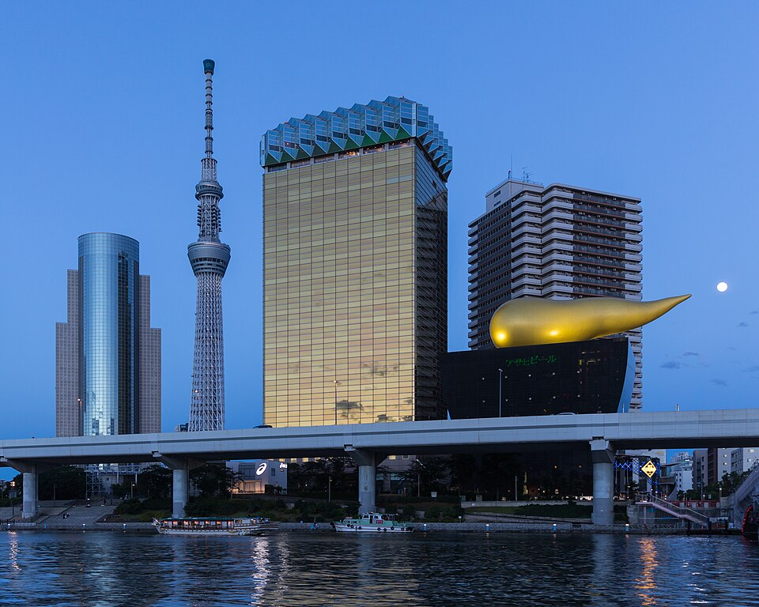

CLASSIC SPOTS
王道観光編
まずはここから。初めての下町さんぽで外せない定番スポットを、エリア別にご紹介します。
🚶 1日モデルコース（浅草 → 押上 → 錦糸町）
- 09:30雷門で記念撮影人が増える前の朝が狙い目。仲見世通りは10時前後から本格的に開店。
- 10:00仲見世通り → 浅草寺食べ歩きを楽しみつつ、本堂でお参り。
- 12:00浅草で昼食天ぷら、もんじゃ、うなぎなど下町の味を。
- 14:00吾妻橋を渡って隅田川テラスへ川越しのスカイツリーを眺めながら、🐢のんびり徒歩で押上方面へ。
- 15:00東京ソラマチ・スカイツリーショッピングや水族館。夕景を狙って展望台へ。
- 18:30錦糸町で夕食・ひとやすみ押上から半蔵門線で1駅。駅前の飲食店街で打ち上げを。